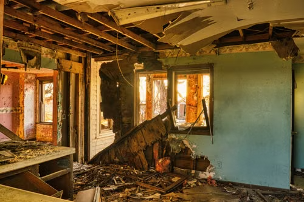
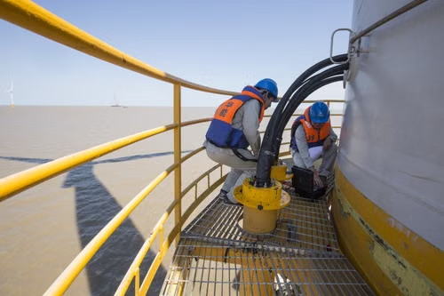
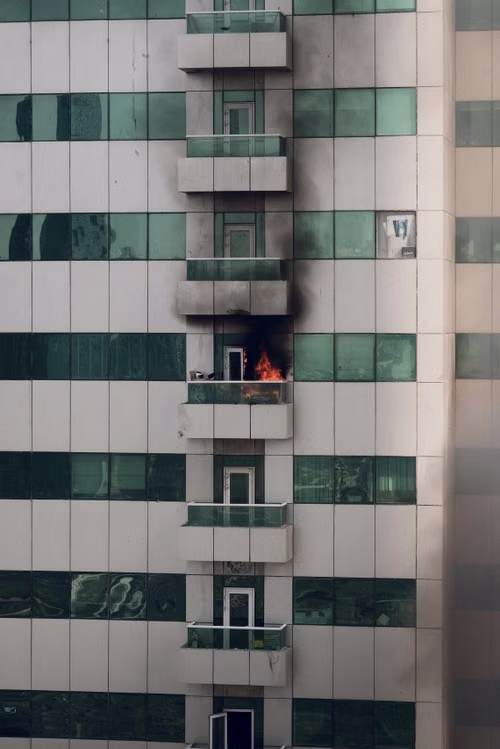
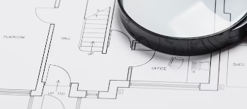

Échanger et cadrer
Comprendre votre demande, les enjeux et les pièces déjà disponibles avant de définir une mission.
Expert indépendant · bâtiment & énergie
Sinistre, malfaçon, dommage à une installation ou diagnostic contesté : vous pouvez solliciter une analyse technique à votre initiative, distincte de celle réalisée pour une autre partie. Nous clarifions d'abord votre besoin, les documents utiles et le périmètre d'une éventuelle mission.
Votre démarche, votre expert
Un expert missionné par une autre partie répond à un cadre d'intervention qui lui est propre. En faisant appel directement à un expert indépendant, vous disposez d'une analyse menée dans le cadre de la mission définie avec vous, en fonction de votre situation et de vos objectifs.
Le premier échange sert à comprendre les désordres ou le désaccord, à identifier les documents disponibles et à vérifier si une intervention est pertinente. Si une mission est envisagée, son périmètre, ses modalités, ses honoraires et ses livrables sont précisés avant toute intervention. L'expertise décrit et analyse des éléments techniques ; elle ne constitue ni un avis juridique, ni une décision d'assurance, ni une garantie sur l'issue d'un différend.
Comprendre votre demande, les enjeux et les pièces déjà disponibles avant de définir une mission.
Confronter les observations et documents au contexte technique, en distinguant constats et hypothèses.
Présenter une analyse argumentée, ses limites et, lorsque c'est utile, les vérifications complémentaires à envisager.
01 / Nos domaines
Particuliers, entreprises et acteurs du bâtiment : découvrez les situations dans lesquelles une analyse technique indépendante peut vous aider à mieux comprendre un dommage, un désordre ou un rapport contesté.

Analyse technique des dommages et désordres affectant un ouvrage, à la suite d'un événement ou de travaux.

Examen de dommages et de désordres concernant des locaux, équipements ou installations professionnelles.
Analyse de désordres ou de performances d'installations de production et de systèmes énergétiques.
Comprendre les caractéristiques énergétiques d'un bâtiment et les facteurs pouvant affecter son confort ou ses consommations.

Constat et analyse des dommages visibles sur les ouvrages et équipements après un incendie ou un dégagement de fumées.

Analyse technique d'un diagnostic mis en cause, contesté ou susceptible de l'être par un tiers, dans le cadre d'une vente ou d'un différend.
La mission porte sur l'analyse d'un diagnostic existant. Elle ne vaut pas réalisation d'un nouveau diagnostic réglementaire.
Découvrir la prestation Parler d'un diagnostic contestéAcheter ou vendre en connaissance de cause
Avant de vous engager, faites examiner visuellement le bien pour mieux comprendre son état apparent, repérer les désordres visibles et anticiper les points à approfondir ou les travaux à envisager.
Visite sans démontage ni sondage destructif : elle ne remplace pas les diagnostics réglementaires et ne garantit pas l’absence de défauts cachés.
Un appui technique indépendant
Dans un différend lié au bâtiment ou à un dommage, un regard technique indépendant peut aider à documenter les faits et à éclairer les échanges.
Les conditions de garantie et l’éventuelle prise en charge des honoraires dépendent de votre contrat et de l’accord de votre assureur.
Sinistres & dommages
Une analyse technique indépendante aide à décrire la situation, à examiner les éléments disponibles et à clarifier les points qui restent à vérifier.
Selon le dossier, l'intervention peut porter sur des infiltrations, dégâts des eaux, problèmes d'humidité, fissures, mouvements d'ouvrage, malfaçons ou dommages apparus après des travaux.
Les pièces communiquées et les observations convenues sont examinées pour décrire les désordres, confronter les hypothèses techniques et préciser les investigations éventuellement nécessaires.
La restitution distingue les faits observés, les analyses et leurs limites. Le périmètre de mission, les modalités et les livrables sont définis avec vous avant toute intervention.
Vous êtes confronté à un sinistre ou à un désordre de construction ? Présentez-nous les premiers éléments du dossier.
Échanger sur votre situationExpertise technique & protection juridique
Si votre différend relève de votre garantie, une expertise indépendante peut vous aider à mieux comprendre les constats et les éléments techniques en discussion. Le contenu de la mission est défini avec vous.
Contactez votre assureur de protection juridique pour connaître les conditions applicables à votre dossier, les éventuels plafonds et l’accord préalable requis avant d’engager une expertise.
Selon le périmètre convenu, les désordres, dommages, rapports et autres documents techniques sont étudiés. Une visite ou des investigations peuvent être proposées si elles sont pertinentes et accessibles.
Une restitution technique distingue les observations, les analyses et les points restant à vérifier. La participation à une réunion d’expertise peut être prévue dans la mission, après accord sur ses modalités.
L’expertise porte sur les aspects techniques : elle ne constitue ni un conseil juridique, ni une représentation auprès de l’assureur et ne préjuge pas de la décision de prise en charge. Les conditions de la garantie sont déterminées par votre contrat et votre assureur.
Parler d’un dossier de protection juridiqueExpertise industrielle
L'examen est adapté à la nature de l'installation, aux dommages signalés et aux éléments techniques accessibles.
La mission peut concerner des locaux, des équipements ou des installations professionnelles touchés par un incident ou un désordre.
Les constats disponibles sont rapprochés du contexte et des documents transmis, afin de caractériser les atteintes et leurs conséquences techniques.
Les investigations envisageables et les limites de l'analyse sont définies en fonction de l'accès aux installations et du périmètre convenu.
Énergies renouvelables
L'analyse porte sur les désordres ou performances signalés pour les équipements de production et les systèmes énergétiques.
Selon le dossier, les équipements examinés peuvent inclure des installations solaires, des pompes à chaleur ou d'autres systèmes thermiques.
Les éléments techniques accessibles et les documents disponibles sont étudiés pour décrire le fonctionnement signalé et les écarts constatés.
Les mesures, accès et investigations utiles sont précisés avant la mission ; aucune performance n'est présumée sans vérification adaptée.
Performance énergétique
L'analyse technique examine les caractéristiques pouvant contribuer au confort ou aux consommations, sans promettre d'économies non mesurées.
L'examen peut porter sur l'enveloppe, les parois et les éléments disponibles permettant de comprendre les transferts thermiques et les désordres associés.
Les systèmes et leur fonctionnement sont étudiés selon les pièces accessibles, les conditions d'usage décrites et le périmètre convenu.
La restitution distingue les observations des hypothèses et indique les limites de l'analyse ; elle ne constitue pas une garantie de résultat énergétique.
Incendie & dommages associés
Un examen technique des dommages visibles peut contribuer à clarifier l'état des ouvrages et les investigations à envisager.
Les atteintes visibles après un incendie ou un dégagement de fumées sont décrites, sous réserve des conditions de sécurité et d'accès.
L'analyse documente les dommages observables et les points qui peuvent nécessiter des vérifications complémentaires par des intervenants compétents.
Les constats et leurs limites sont présentés pour éclairer le dossier, sans se substituer aux décisions de l'assureur ni à un conseil juridique.
Diagnostics immobiliers contestés
L'intervention porte sur un rapport existant et sur les constats, méthodes ou conclusions contestés ou susceptibles de l'être par un tiers.
Le diagnostic concerné, son contexte et les documents utiles transmis sont examinés pour comprendre les points en discussion.
L'analyse peut concerner un DPE, l'amiante, le plomb, l'électricité, le gaz ou un autre diagnostic selon le dossier et les compétences mobilisables.
La mission porte sur l'analyse d'un diagnostic existant ; elle ne vaut pas réalisation d'un nouveau diagnostic réglementaire ni avis juridique.
Visite avant achat immobilier
La visite vous aide à mieux comprendre l’état apparent du bien et à poser les bonnes questions avant une acquisition ou une vente. Son périmètre est défini avec vous avant l’intervention.
Lors d’une visite sur place avec vous, l’examen visuel porte, selon les accès et le périmètre convenu, sur les ouvrages, les équipements et les finitions du bien.
Les signes de pathologie, de malfaçon apparente ou de vétusté sont relevés afin de distinguer les constats des points qui demanderaient des vérifications complémentaires.
La restitution écrite prévue dans la mission synthétise les constats et les limites de la visite. Elle peut vous aider à préparer vos questions et à identifier les sujets à approfondir.
La visite est visuelle et non destructive : elle ne comprend ni démontage, ni sondage, ni diagnostic réglementaire. Elle ne permet pas de garantir l’absence de désordres non visibles et ne constitue pas un devis de travaux.
Parler de votre projet d’achat02 / Une méthode lisible
Chaque mission est définie en fonction des enjeux techniques, du contexte contradictoire, des pièces disponibles et du niveau d'investigation utile.
Nature du dommage ou du besoin, contexte, localisation et urgence éventuelle.
Prise en compte du contexte et des parties concernées, puis définition du périmètre, des modalités et du devis avant toute intervention.
Visite et investigations techniques convenues, avec examen des documents pertinents.
Remise des constats et conclusions prévus dans la mission, avec leurs limites et les suites possibles.
Grille tarifaire établie selon les usages déontologiques de la profession d'expert indépendant : estimation déterministe basée sur la complexité technique, la surface du bien et le niveau de valeur probante requis.
Honoraires & transparence
Chaque situation est différente. Le premier échange permet de comprendre votre demande et ne vous engage pas à confier une mission.
| Type d’intervention | Périmètre possible | Tarification |
|---|---|---|
| Analyse de documents | Examen de rapports, diagnostics, devis ou pièces techniques et réponse aux questions définies ensemble. | Devis précisant les documents et livrables concernés. |
| Expertise ou visite sur site | Constats visuels ou investigations convenues sur un bâtiment, un équipement ou une installation. | Devis établi selon la mission, le déplacement et les investigations prévues. |
| Intervention contradictoire | Participation à des opérations contradictoires lorsque le contexte et le périmètre convenu le prévoient. | Devis adapté aux modalités de l’intervention et aux parties concernées. |
Avant votre accord, le devis détaille le périmètre, les honoraires, les frais éventuels de déplacement ou d’investigation ainsi que les livrables prévus. Aucune mission ne débute sans validation préalable du devis. Les honoraires sont définis pour la mission convenue, et non présentés comme un pourcentage d’une indemnité.
Une expertise technique ne se substitue pas à un conseil juridique ni aux décisions d'un assureur ou d'une juridiction.
03 / Zone d’intervention
Les interventions sur site couvrent les secteurs ci-dessous. Les temps de trajet sont indicatifs et varient selon le lieu de départ, la destination et les conditions de circulation.
30 min à 1 h 15
Lyon, Villeurbanne, Villefranche-sur-Saône, Caluire-et-Cuire.
30 min à 1 h 15
Mâcon, Chalon-sur-Saône, Tournus.
45 min à 1 h 20
Lons-le-Saunier, Saint-Claude, Dole.
45 min à 1 h 20
Nord-Isère, Bourgoin-Jallieu, Vienne, Crémieu.
45 min à 1 h 20
Annecy, Rumilly, Saint-Julien-en-Genevois.
1 h à 1 h 30
Chambéry, Aix-les-Bains.
15 min à 1 h 15
Genève, Nyon. Temps estimés depuis le Pays de Gex ou le Haut-Bugey.
Pour une intervention sur site, le secteur et les frais de déplacement éventuels sont précisés dans le devis avant toute mission.
04 / Préparer votre visite
Si une mission s’ouvre, vous savez avant de signer ce qu’elle coûte, ce qu’elle couvre et ce qu’elle ne couvre pas. La visite est planifiée selon la région et l’urgence ; le rappel se fait sous 24 heures ouvrées. Les pièces ci-dessous facilitent l’analyse, mais ne retardez pas votre demande si vous ne les avez pas toutes.
| Pièce | À quoi elle sert | Si vous ne l’avez pas |
|---|---|---|
| Photos datées des désordres | Établir leur ancienneté et leur évolution. | Photographiez-les maintenant, avec un objet de taille connue à côté. |
| Procès-verbal de réception des travaux | Repérer la date de réception, utile pour situer le délai décennal applicable. | L’acte de vente ou l’attestation dommages-ouvrage peuvent parfois aider à retrouver cette date. |
| Rapport de l’expert de l’assurance | Identifier les points contestés, poste par poste. | Demandez-en une copie à votre assureur. |
| Devis et factures des entreprises | Comparer les travaux prévus et ceux réalisés. | Les constats sur site peuvent contribuer à documenter les ouvrages accessibles. |
| Conditions générales du contrat d’assurance | Repérer les garanties de protection juridique et les clauses d’expertise. | Demandez-les à votre assureur. |
Retours d'Expérience Client
Découvrez comment des particuliers et entreprises de l'Ain et de la région AURA ont obtenu gain de cause grâce à notre indépendance.
« Face au refus d'indemnisation de mon assurance pour des infiltrations toiture, le contre-rapport de Sébastien Mathe a fait plier l'expert adverse. Travaux intégralement pris en charge (14 500 €). »
« Contre-analyse technique d'un DPE manifestement sous-estimé qui bloquait la vente de notre immeuble. Rectification officielle de l'étiquette F à D après réévaluation impartiale. »
« La visite technique avant achat de notre maison ancienne nous a permis de déceler des fissures structurelles masquées et d'éviter un piège financier de plus de 30 000 €. »
05 / Vos questions
Les premières réponses pour comprendre le périmètre d’une mission et préparer votre demande.
Décrivez brièvement la situation, le lieu concerné et votre objectif. Des photos, rapports, devis, factures ou courriers peuvent aider à cadrer la demande, mais leur absence ne doit pas retarder le premier contact. N’envoyez pas de pièce confidentielle dans le formulaire.
La prise en charge dépend des garanties, des plafonds et des modalités prévus par votre contrat et votre assureur. Vérifiez-les avec votre assureur avant d’engager une mission. L’intervention porte sur l’analyse technique, pas sur le conseil juridique.
Un devis précise avant tout accord le périmètre de la mission, les honoraires, les frais éventuels de déplacement ou d’investigation et les livrables prévus. Aucune mission ne débute sans validation préalable du devis.
La visite est planifiée selon le secteur, les disponibilités et l’urgence de la situation. Après une demande, le rappel est effectué sous 24 heures ouvrées ; la date d’intervention est ensuite convenue avec vous.
Non. La mission porte sur les questions techniques convenues. Elle ne remplace ni un diagnostic immobilier réglementaire, ni un conseil juridique, ni les décisions d’un assureur ou d’une juridiction.
06 / Rendez-vous & Diagnostic
Traitement et qualification en temps réel de vos demandes d'intervention par notre copilote technique : détection d'urgence, pré-analyse des désordres et planification optimisée sans collision d'agenda.
Quelques repères suffisent pour présenter votre demande. Vous pourrez préciser les éléments techniques utiles lors de l'échange :
Indiquez également la commune du bien ou de l'installation. Pour un diagnostic immobilier, précisez s'il est mis en cause, contesté ou susceptible de l'être par un tiers. Pour une demande liée à une protection juridique, indiquez si vous avez déjà contacté votre assureur et si les modalités d’intervention sont connues. Ne joignez pas de pièce confidentielle à ce premier message.
Transmettez-nous les premiers éléments de votre demande ; nous vous recontacterons sous 24 heures ouvrées.
Vous préférez nous joindre directement ?
07 78 24 65 67 contact@efficiens-energia.fr480 Route du Belvédère
01250 Hautecourt-Romaneche